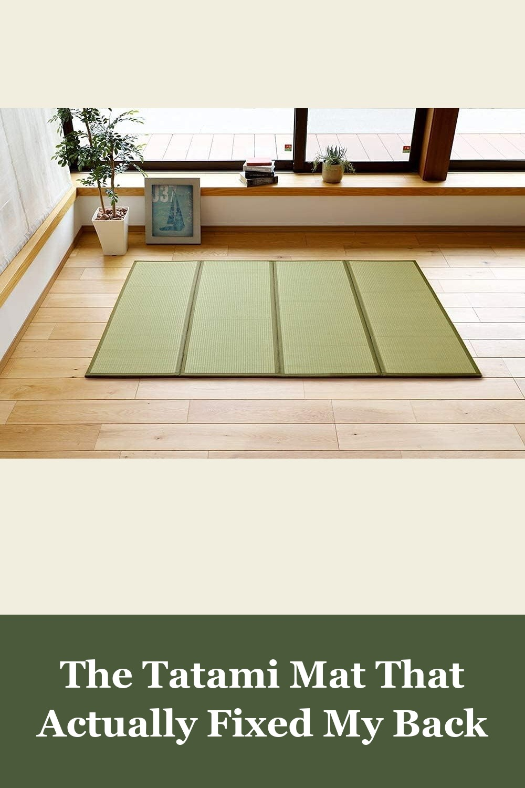
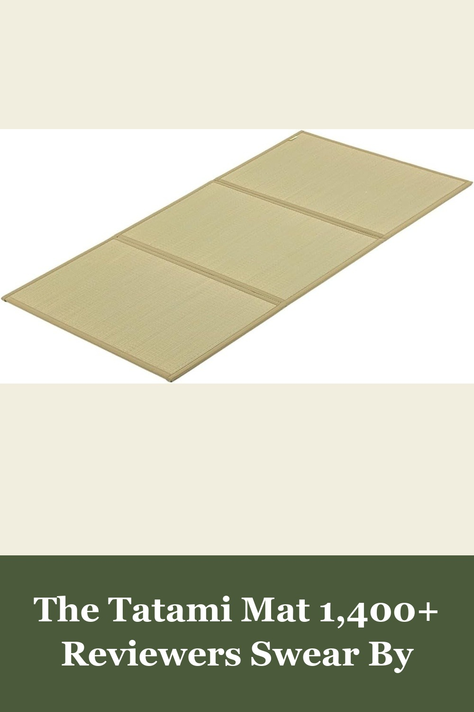
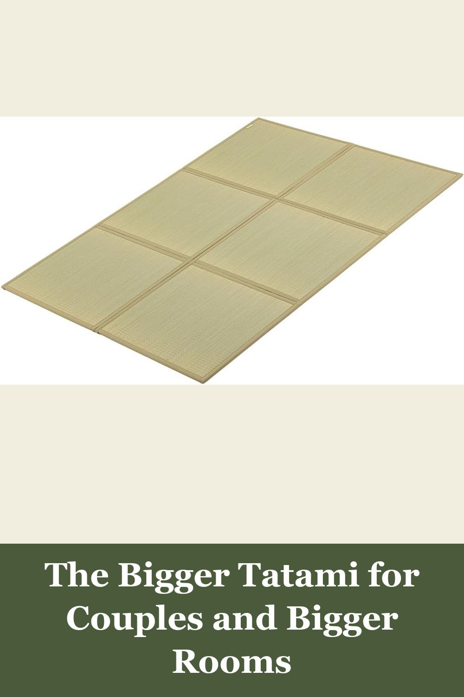

MIINA Japanese Traditional Tatami Mat, Igusa Rush Grass Floor Mattress (Full)
100% natural igusa rush grass, quad-fold for easy storage, with a calming grassy scent that mellows over time. Lay it under a futon or use it on its own as a firm, breathable floor mat that naturally regulates temperature and humidity.
I removed my 8-inch-thick king-size memory foam mattress from my bed frame, and laid down a king-size tatami over the slats... So much less back and shoulder pain then I had with the 'biggest and best' memory foam mattress... Great purchase. Highly recommend for anyone struggling with pain in bed.— verified Amazon buyer
View on Amazon →
FULI Japanese Tatami Mattress, Foldable Igusa Rush Grass (Twin XL)
Made in Japan with authentic igusa rush grass and traditional weaving techniques. This foldable tri-fold mat creates a firm, breathable base for a futon or floor sleeping setup — the calming grass scent and temperature-regulating weave are the real deal.
Back pain no longer exists. I wake up, I get out of the tatami, I stand up, I don't feel as groggy... I'd rather have minor tenderness on my hip bones than to feel like my back is collapsing in on itself, as I had on several super firm mattress configurations... Tatami/futon wins for me.— verified Amazon buyer
View on Amazon →
FULI Japanese Tatami Mattress, Foldable Igusa Rush Grass (Full)
Same authentic Made-in-Japan igusa rush grass construction as FULI's bestselling Twin XL, sized up for couples or anyone wanting more room to stretch out. Folds into three sections for storage, with the same breathable, moisture-wicking weave.
I saw someone leave a 1-star review saying this tatami mat 'smells like rabbit food.' Have you… never been to Japan? The scent is exactly what you'd expect from real tatami — earthy, clean, and very nostalgic if you've ever stayed in a Japanese ryokan... I'm honestly super happy with this purchase.— verified Amazon buyer
View on Amazon →